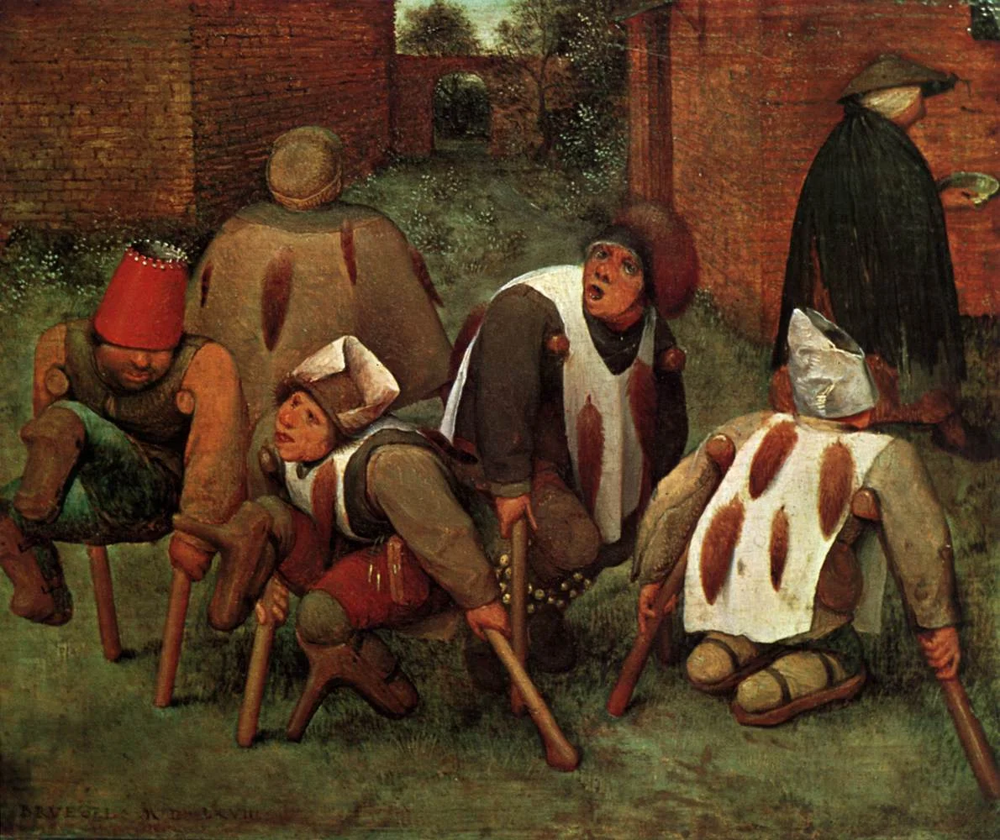
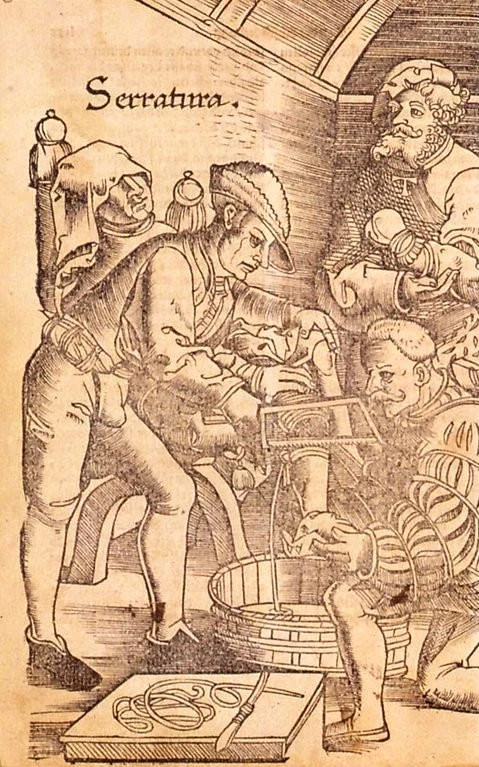

The black sclerotia grow where the grain should be. Thick, dark, slightly curved, they replace the kernels of rye with something the plant never intended. Farmers in the Middle Ages called them spurs. They look like claws.
Claviceps purpurea is a parasitic fungus. It infects cereal crops, especially rye, in cool and damp growing seasons. The alkaloids it produces are related to lysergic acid. When contaminated grain is milled into flour and baked into bread, the poison enters the body through the most ordinary act: eating.
The effects come in two forms. Convulsive ergotism brings seizures, muscle spasms, and hallucinations. Gangrenous ergotism cuts off blood flow to the extremities. Fingers blacken. Toes fall away. Medieval writers described it as an invisible fire consuming the limbs from within, and they were not far wrong. The burning sensation was real. The name they gave it was St. Anthony's Fire.
Epidemics struck Europe repeatedly from the ninth century onward. In 944, an outbreak in Aquitaine killed an estimated 40,000 people. The Holy Roman Empire saw waves of mass poisoning through the eleventh and twelfth centuries. Entire villages went mad, or went lame, or both. The cause remained unknown for hundreds of years.
The fire in the grain
In 1976, a behavioural psychologist named Linnda Caporael published a short paper in Science. Her argument was simple and startling: the Salem witch trials of 1692 were caused by ergot poisoning. The accusers, mostly young girls, had displayed convulsions, hallucinations, crawling sensations on the skin. The rye crop in Salem Village that year had grown in conditions perfect for Claviceps. Caporael proposed that the girls were not lying, not possessed, and not hysterical. They were poisoned.

The theory caught fire. It offered something rare in the history of witch trials: a material explanation. No need for mass delusion or Puritan cruelty. Just bad bread. Historians and toxicologists debated the claim for decades. Some pointed out that not all accusers lived in the affected area, that ergot poisoning does not fully match the trial testimony, that the political dimensions of Salem resist any single cause.
But the idea never quite died. It resurfaced in discussions of the Pont-Saint-Esprit incident of 1951, when hundreds of residents in a small French town experienced hallucinations, convulsions, and psychotic episodes after eating bread from a local bakery. Some jumped from windows. Several died. The official explanation blamed ergot-contaminated flour, though later investigations suggested mercury-based fungicide or even covert CIA experiments with LSD. The truth remains contested.
What links these episodes is a question that sits beneath the chemistry: can the sacred be reduced to the toxic? If a prophet's vision and a poisoning victim's delirium share a common molecule, does that settle the matter?
The limbs of the afflicted blackened as if burned, and fell away piece by piece before death mercifully followed.
Chronicle of Sigebert of Gembloux, c. 1089
The limits of the chemical explanation
Grunewald knew the answer was no. Or at least his painting suggests as much.
The Isenheim Altarpiece was commissioned for the Monastery of St. Anthony in Isenheim, Alsace, where Antonine monks cared for sufferers of ergotism. Patients would have been brought before the painting as part of their treatment. They would have seen St. Anthony attacked by demons, his body torn and twisted, and they would have recognized their own suffering in the image. The monsters clawing at the saint have skin lesions. Their limbs are gangrenous. Grunewald painted the disease into the demons themselves.

But the altarpiece does not explain the suffering away. It places it inside a story. The pain is real. The fire is real. And so is the saint's endurance. The painting holds both the material and the spiritual without collapsing one into the other.
This is where the ergot theory, for all its ingenuity, runs into trouble. It works as toxicology. It fails as history. To say that Hildegard of Bingen's visions were caused by ergot, or that the Oracle at Delphi inhaled volcanic fumes, or that Moses encountered a burning bush rich in dimethyltryptamine, is to answer one question while ignoring several better ones. What did the vision mean to the person who experienced it? What did it make them do? What world did it help them build?
Caporael herself never claimed ergot explained everything about Salem. She offered a partial cause, not a total one. The reductionists came later, eager to swap one monocausal story for another. Puritan hysteria out, grain fungus in. The shape of the explanation stayed the same. Only the villain changed.
The ergot is real. The alkaloids are real. The convulsions and the gangrene and the hallucinations are documented beyond any reasonable doubt. But the history of visionary experience is not a problem to be solved by gas chromatography. The fire in the grain does not account for the fire in the mind. Grunewald understood this. He painted the disease and the demons and the saint all in the same frame, and he did not tell you which one to believe.
Some questions are better left open. The black sclerotia still grow in wet rye fields, quiet and patient. The visions, wherever they come from, have not stopped either.